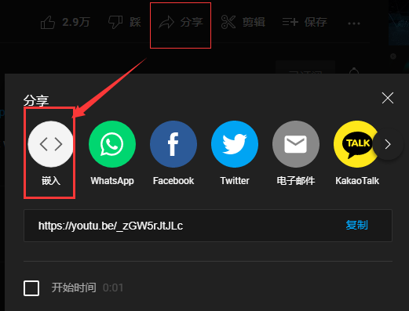

Chapter 4:插入媒体+HTML属性
插入图像
图像是由 <img> 标签定义的
<img> 是空标签，意思是说，它只包含属性，并且没有闭合标签。
实例：
<img src= "https://anxing233.github.io/img/class4/imgine.webp" alt= "文本" width= "100px" height= "100px"/>
下面具体讲讲这些涉及的属性：
src属性（源属性）
"src"是img标签必要的属性，src指”source“，该属性的值是图像的URL地址。
URL地址什么意思？ 就是存放图像的位置。
如果我把一个图像文件"imgine.webp"放在这个网站根目录的”img“文件夹里的”class4“文件夹的话，那么这个”URL地址“就是：
https://anxing233.github.io/img/class4/imgine.webp （链接可以复制到浏览器查看）
alt属性(替换文本属性)
alt 属性用来为图像定义一串预备的可替换的文本。替换文本属性的值是用户定义的。
比如：
<img src="https://anxing233.github.io/img/class4/imgine.webp" alt= "热词系列_知识增加"/>

这个是在你在刷新网页（或者爬梯子）时无法及时显示图片时，这个图片会有一串文字，那就是alt属性里的文字
当浏览器无法载入图像时，替换文本属性可告诉读者他们失去的信息。此时，浏览器将显示这个替代性的文本而不是图像。
为页面上的图像都加上替换文本属性是个好习惯，这样有助于更好的显示信息，并且对于那些使用纯文本浏览器的人来说是非常有用的。
宽高属性(width,height)
懂得都懂，改它显示的宽高，默认单位是px(像素)，也可以是其他单位(cm什么的)
如果你不知道要调多少时，你可以用百分号"%"确定宽高比（如果用%的两个参数要一致）
其他属性
align属性
- left(浮动在网页左侧)
- right(浮动在网页右侧)
- top(图像顶部在文本对应的行)
- bottom(默认值，图像底部在文本对应的行)
- middle(图像的中部在文本对应的行)
(由于说不清楚是什么效果，请点击此处查看)
title属性
这个属性就是把鼠标悬停在图像那里，显示的文字就是title属性里的属性值（文字）
例如：看看这个！把鼠标悬停在下面的图像看看！如果没出错的话，显示的文字是“热词系列_知识增加”
插入音频
<audio> 标签可以插入音频
实例：
<audio src= "URL" controls= "controls" autoplay= "autoplay" loop="loop"></audio>
<audio> 标签属性
- src: 音频源
- controls: 显示控件（播放，下载，播放速度什么的）(不开=废了)
- autoplay: 自动播放（加了的话一打开网页就炸耳(bushi)）
- loop: 俗称洗脑循环
- (其实controls,autoplay,loop都可以不用写后面的属性的，但最好写写)
效果如下所示(没有设置自动播放)(注意音量)：
(是谁应该都知道吧...)
插入视频
<video> 标签可以插入音频
实例：
<video src= "URL" controls= "controls" autoplay= "autoplay" loop="loop"></video>
<video>标签属性同上
效果如下所示(一样没设自动播放)(注意音量)：
视频取自：[东方]ナイト—オブ—ナイツ 十六夜咲夜_哔哩哔哩_bilibili
HTML路径
文件路径描述了网站文件夹结构中某个文件的位置。
文件路径会在链接外部文件时被用到：
- 网页
- 图像
- 样式表
- JavaScript
路径主要分为绝对路径和相对路径：
绝对路径
绝对文件路径是指向一个因特网文件的完整 URL：
实例：
<img src="https://anxing233.github.io/img/class4/example.jpg" alt="picture"/>
相对路径
相对路径指向了相对于当前页面的文件。
在本例中，文件路径指向了位于当前网站根目录(index.html所在目录)中 img 文件夹里的一个文件：
实例
<img src="/img/picture.jpg" alt="flower"/>
在本例中，文件路径指向了位于当前文件夹中 img 文件夹里的一个文件：
实例
<img src="images/picture.jpg" alt="flower">
在本例中，文件路径指向了位于当前文件夹的上一级文件夹中 img 文件夹里的一个文件：
实例
<img src="../img/picture.jpg" alt="flower">
PS：写路径时最好使用相对路径
扩展：嵌入bilibili & YouTube视频
在bilibili里视频的播放页里，找到“分享”，点击“嵌入代码”
吧复制的代码粘贴到你的html文件里就行了
但是刚开始那播放窗口很小，所以加入width和height属性设置窗口宽高
YouTube视频同上，但无需设置宽高

所用的视频：
YouTube的视频在国内被墙了，所以需要魔法（确信）